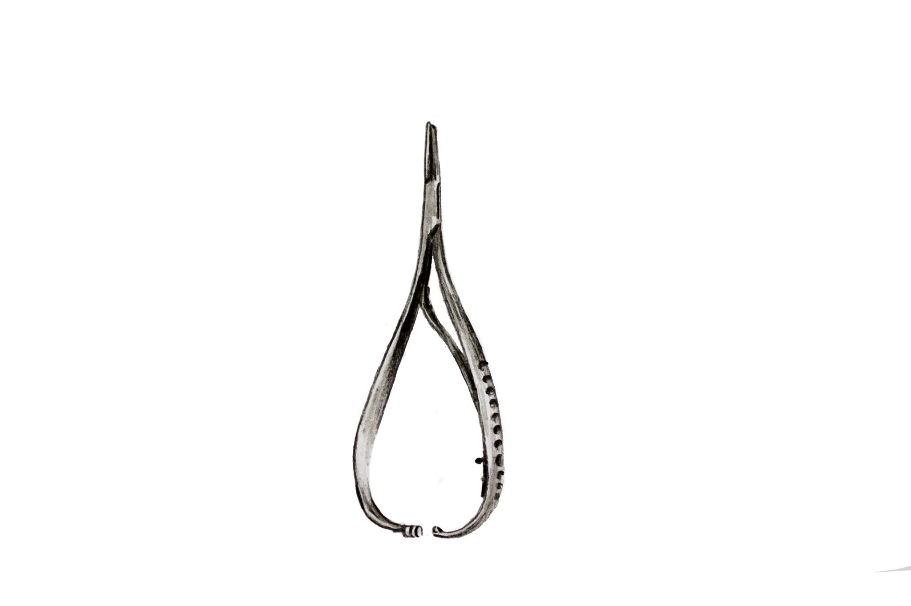
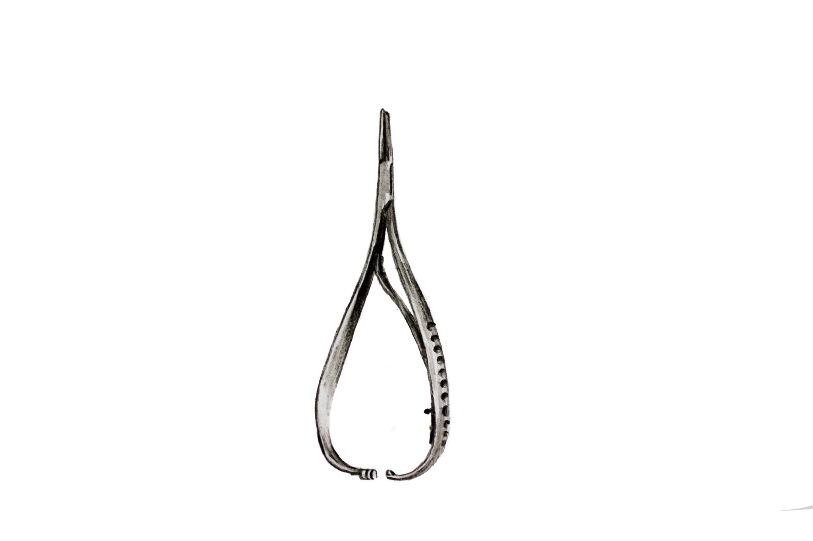
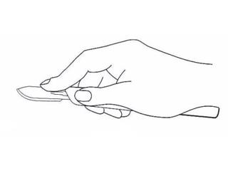
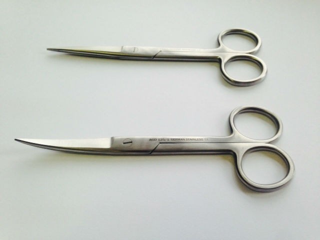
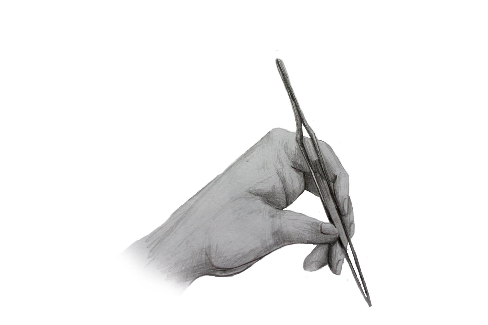
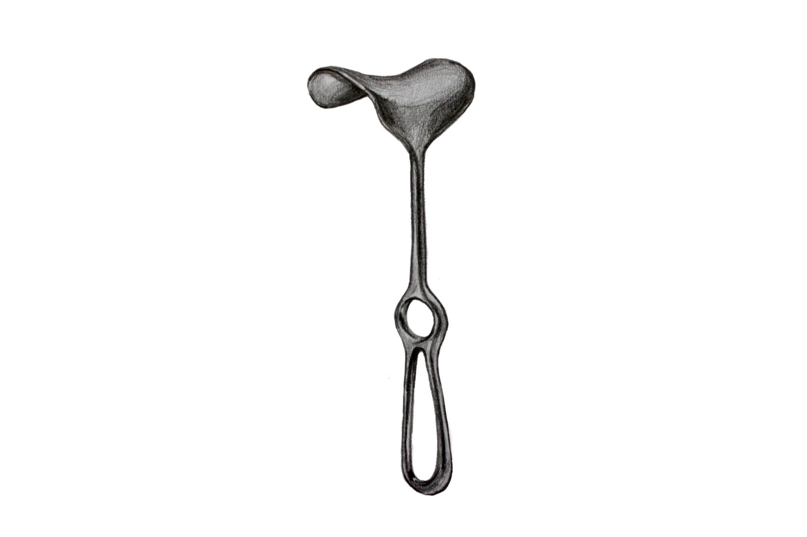
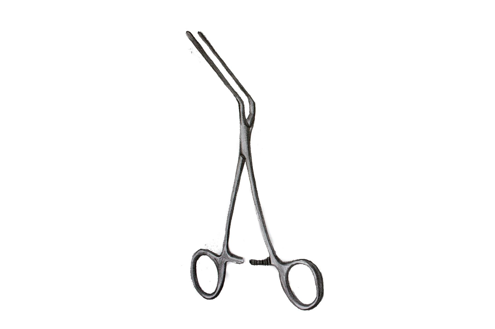
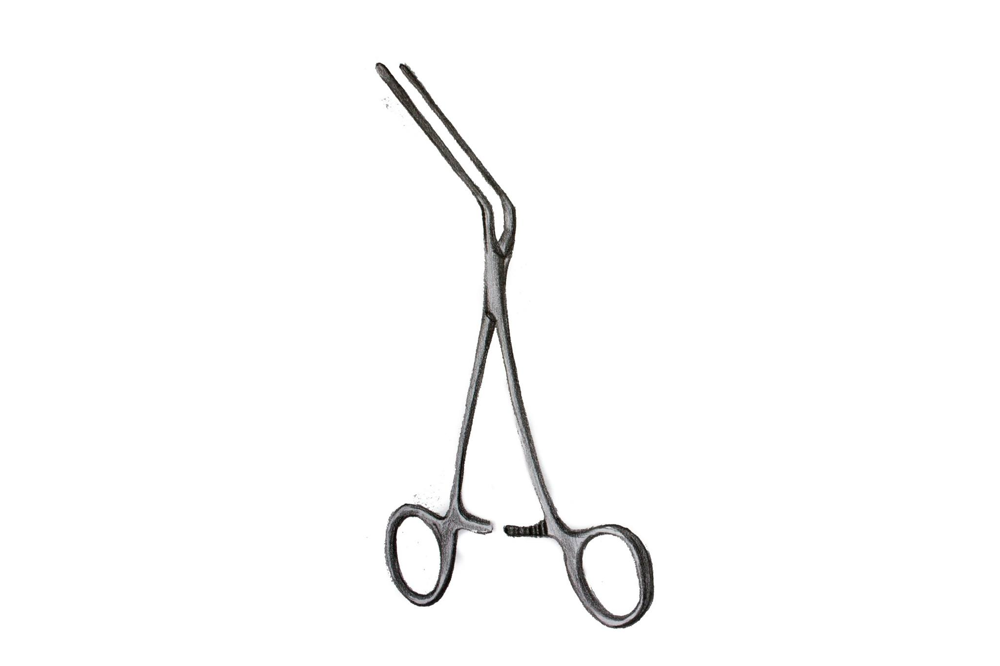
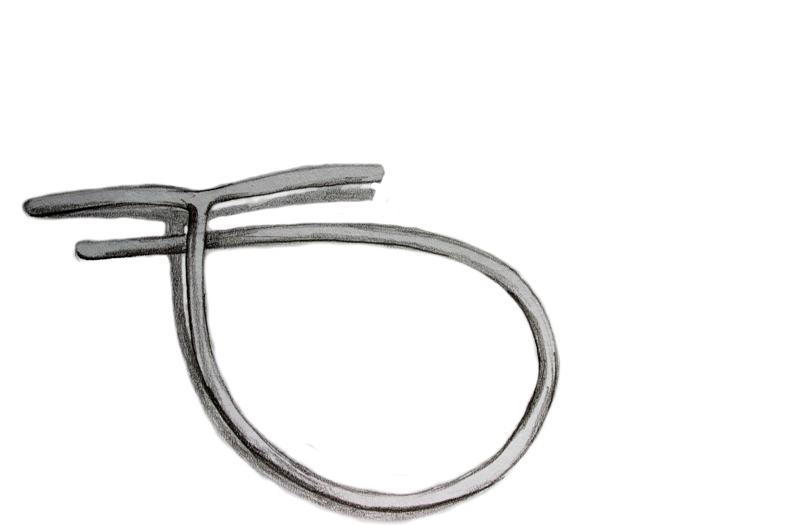

Zanim zabierzesz się za operowanie wypadłoby abyś zdobył nieco informacji na temat narzędzi, którymi będziesz się posługiwał. Będąc na sali operacyjnej musisz używać fachowej terminologii. Dlaczego? Odpowiedź jest bardzo prosta. Otóż dlatego, żeby Twoi współpracownicy czyli asysta czy instrumentariuszka wiedzieli jakiego narzędzia w danej chwili potrzebujesz. To znacznie usprawni pracę Twojego zespołu, a w konsekwencji daje szansę na lepszy efekt lecznicy przeprowadzonego zabiegu. W tym rozdziale postaram się w sposób krótki, ale wystarczający dla studenta medycyny czy początkującego chirurga, przedstawić informacje na temat podstawowego instrumentarium chirurgicznego.
Imadła chirurgiczne
Inaczej zwane igłotrzymaczami. Są to narzędzia służące do trzymania igły chirurgicznej w trakcie szycia. Poza tym są używane do wiązania szwów na narzędziu. W zależności od szytej tkanki imadła mają różną konstrukcję. W praktyce najczęściej można spotkać się z dwoma typami imadeł, a mianowicie: typu Hegara (ryc. 1) lub typu Mathieu (ryc. 2)
 

Jak używać imadła? Należy je trzymać tak, aby kciuk i palec czwarty znajdowały się w uszkach narzędzia, palec trzeci spoczywał u podstawy uszka przeznaczonego dla palca czwartego, a palec drugi dodatkowo stabilizował ramię imadła. (zdj. 1,2,3) Aby zamknąć zatrzask należy zbliżyć do siebie oba uszka narzędzia. Natomiast żeby otworzyć zatrzask trzeba odepchnięcie uszko przeznaczone dla kciuka ku dołowi.


Narzędzia tnące
Skalpel
Podstawowe narzędzie służące do cięcia tkanek. Klasyczny skalpel składa się z trzonka i wymiennych ostrzy. (zdj. 4)

Jak trzymać skalpel? Skalpel układa się wzdłuż dłoni, równolegle do powierzchni tkanki i trzyma pomiędzy kciukiem a palcem trzecim; opuszka palca drugiego leży na jego grzbietowej krawędzi, u podstawy ostrza. Palec czwarty i piąty wspomagają palec trzeci w utrzymaniu trzonka skalpela.( ryc. 3)
Nożyczki
Narzędzie służące do przecinania i preparowania tkanek, a także przecinania szwów chirurgicznych czy obcinania nadmiaru nici. Wyróżniamy nożyczki o prostych lub zagiętych pod różnym kątem ostrzach, przy czym te drugie służą przede wszystkim do preparowania tkanek. (zdj. 5)
Sposób uchwytu nożyczek chirurgicznych (ryc.4)

Narzędzia służące do chwytania tkanek
Pincety
W chirurgii spotykamy się najczęściej z dwoma typami pincet: chirurgiczną i anatomiczną. Pinceta chirurgiczna (zdj. 6) posiada ząbki na zakończeniu jednego z ramion, które odpowiadają wcięciom na drugim ramieniu. Służy do przytrzymywania skóry, mięśni i powięzi.

Pinceta anatomiczna (zdj. 7) nie posiada ząbków na końcu, ale nacięcia które zapobiegają miażdżeniu tkanek. Wykorzystywana jest do przytrzymywania delikatnych struktur.

Wielu młodym adeptom chirurgii zdarza się nieprawidłowo trzymać pincetę stosując tzw. „małpi chwyt”. Pincetę trzyma się pomiędzy kciukiem a palcem wskazującym i środkowym co przedstawiono na ryc. 5.
Kleszczyki
Najczęściej spotyka się 4 rodzaje kleszczyków: Kleszczyki Peana Gładkie, bez ząbków na końcach. Stosowane najczęściej do chwytania naczyń krwionośnych
Kleszczyki Kochera (zdj.9) Wyposażone w ząbki na końcach. Używane do przytrzymywania mięśni i powięzi.

Kleszczyki Mikulicza (zdj.10) Wygięta na końcach, nieco większe od kleszczyków Kochera, ale o podobnym zastosowaniu.

Kleszczyki Chaputa (zdj.11) Ze względu na delikatność ucisku kleszczyki te wykorzystywane są do podtrzymywania delikatnych struktur takich jak żołądek czy jelita.

Klemy
Wyróżniamy dwa typy klemów: Miękkie (niemiażdżące) stosowane m.in. do zaciskania naczyń: Satinsky’ego (zdj. 12), De Bakeya (zdj. 13), typu „Buldog” (zdj. 14)
 


Twarde (miażdżące) mające zastosowanie w zaciskaniu resekowanych fragmentów jelita - klem jelitowy Sarota(ryc. 6)

Haki chirurgiczne
Narzędzia te wykorzystywane są do odciągania i rozwierania tkanek, w celu dobrego uwidocznienie pola operacyjnego. W zależności od tkanki/narządu z jakim mamy do czynienia stosujemy:
- Haki skórne- zakończone ząbkami (ryc. 7)
- Haki do tkanki podskórnej - Farabuefa (zdj. 15 ), Langenbecka (zdj. 16 )
- Haki do powłok brzusznych - hak powłokowe ( ryc. 8 )
- Haki do narządów wewnętrznych - haki i lyżki brzuszne (ryc. 9 )


Dreny i cewniki
Dreny
Dren Redona (zdj. 17) Jest to rurka z tworzywa sztucznego długości 50-75 cm z licznymi bocznymi otworami. Jeden jego koniec umieszczony jest w ranie, drugi koniec, znajdujący się poza raną mocuje się do mieszka wytwarzającego niewielkie podciśnienie ssące.

Dren Kehra (zdj. 18) Ma charakterystyczny kształt litery „T”. Stosowany jest do odbarczania dróg żółciowych. Może być także stosowane w urologii do drenażu zszywanych moczowodów.
Cewnik urologiczny
jest cienką rurką z tworzywa sztucznego wprowadzaną do pęcherza w celu odprowadzenia moczu. Rozmiar cewnika podaje się w skali French (F), która określa obwód cewnika w milimetrach. Gdybyśmy chcieli przeliczyć ten rozmiar na średnicę cewnika to wtedy 1F = 0,33 mm , średnica cewnika o wymiarze 9 F będzie się równała 3 mm, a 18 F - 6 mm. Ze względu na budowę i przeznaczenie cewniki wkładane do pęcherza przez cewkę moczową dzieli się na kilka typów: Cewnik Foleya (ryc. 10A) Jest to cewnik prosty z dwoma bocznymi otworami oraz balonikiem, który zabezpiecza cewnik przez wysunięciem się z pęcherza. Posiada dwa kanały, jedne do napełniania balonika, drugi do odprowadzania moczu. Balonik umieszczony jest powyżej otworu bocznego cewnika, do środka wstrzykuje się jałowy płyn, najlepiej wodę do wstrzyknięć. Najczęściej wykonany jest z lateksu lub silikonu. Cewnik Nelatona (ryc. 10B) Cewnik prosty, posiada jeden boczny otwór na końcu. Wykonany jest z gumy lub miękkich mas plastycznych. Używany zazwyczaj do jednorazowego cewnikowania. Cewnik Tiemanna (ryc. 10C) Posiada zagiętą końcówkę i stożkowate zakończenie, ma dwa boczne otwory i grzebień. Stosowany jest u mężczyzn z przerostem gruczołu krokowego lub ze zwężoną cewką moczową. Cewnik Pezzera (ryc. 10D) Samoutrzymujący się cewnik z zakończeniem w postaci główki. Stosowany do utrzymywania przetoki nadłonowej pęcherza.
Nici chirurgiczne
Na skróty

1. Grubość nici w skali USP. Im większa cyfra przed zerem, tym mniejsza nić!
a. Grubość w skali europejskiej. Cyfra oznacza ilość dziesiętnych części milimetra. Tutaj średnica wynosi 0,2 mm
2. Długość bezwzględna igły oraz wycinek koła którego ma kształt. Tutaj ½ circle – pół koła
3. Rozmiar igły w skali 1:1.
4. Symbol przekroju igły. Tutaj: kółko – igła kłująca. Symbol trójkąta oznacza tzw. Igłę tnącą.
5. Długość nici
6. Nazwa nici
7. Materiał, kolor i sposób wykonania Tutaj: Polyglactin 910 (vicryl), fioletowa, pleciona, wchłanialna.
8. Symbol użytego środka sterylizującego Tutaj: EO – tlenek etylenu
9. Data przydatności do użycia
10. Symbol oznaczający sprzęt jednorazowego użytku
Obecność opisu igły wskazuje na zestaw do szwów atraumatycznych, czyli igły fabrycznie wtopionej w nić. Zestaw taki nie wymaga nawlekania igły oraz zmniejsza uszkodzenie tkanek.
Łyk historii
Pierwsze doniesienia o szwach chirurgicznych sięgają 3000 r. P.n.e. ze starożytnego Egiptu.
Nici wykonywano z materiałów roślinnych (len, konopia, bawełna) oraz zwierzęcych, takich jak włosy, ścięgna czy tętnice. W II w n.e. rzymski lekarz Galen opisał nici zrobione ze zwierzęczych jelit. Istnieją one do dziś pod nazwą Catgut (ang. Cattle – bydło, Gut – Jelito). Są wykonywane z jelit owiec lub kóz. (W procesie produkcyjnym nie ucierpiał żaden kot.)
Dopiero w latach 1860-80 Ojciec Antyseptyki, Joseph Lister pracował nad nićmi jedwabymi a następnie typu Catgut zanurzanymi w wodnym roztworze fenolu, co pozwoliło na uniknięcie tak częstego wówczas ropienia szwów.[1]
Nici chirurgiczne
Nici chirurgiczne dzielą się, w zależności od właściwości na dwie główne kategorie:
1. Wchłanialne – Stopniowo ulegają rozkładowi w tkankach, ale zdecydowanie szybciej tracą wytrzymałość. Z założenia używane do szwów głębokich, błon śluzowych oraz szwów śródskórnych. Czasami używa się ich do skóry, szczególnie w chirurgii dziecięcej, aczkolwiek szwy wchłanialne powodują trochę większy odczyn tkankowy niż niewchłanialne, co może mieć negatywny wpływ na estetykę blizny. Szwami wchłanialnymi długo utrzymującymi napięcie można również szyć ścięgna.
a) Naturalne
- Catgut -są to nici wytwarzane z bydlęcych jelit. Wycofywane z użytku ze względu na trudny do przewidzenia czas wchłaniania, dość silny odczyn zapalny, oraz możliwość przeniesienia chorób prionowych. Czas wchłaniania wynosi około 60-70 dni
- Catgut chromowany - odmiana nici Catgut. Poddawane są działaniu roztworu soli chromu, co uodparnia je na degradację i pozwala osiągnąć dłuższy oraz bardziej przewidywalny czas wchłaniania. (60-90 dni) Nici te są mocniejsze i wywołują mniejszy odczyn tkankowy niż „Plain Catgut”
b) Z tworzyw sztucznych – wywołują mały odczyn zapalny
- Vicryl – poliglaktyna 910
- Dexon – kwas poliglikolowy
- PDS – polidwuoksanon
- Polysorb – lactomer
- Caprosyn – polimerowy
- Biosyn – poliestrowe
- Monocryl – polyglecaprone 25
|
Podtrzymywanie tkanek [dni] |
Całkowite wchłonięcie [dni] |
|
|
Plain gut |
7-10 |
70 |
|
Vicryl rapide |
10-14 |
42 |
|
Caprosyn |
10 |
<56 |
|
Chromie gut |
2 |
90 |
|
Coated vicryl |
3 |
90-120 |
|
Monocryl |
3 |
90-120 |
|
Polysorb |
3 |
56-70 |
|
Dexon II, S |
3 |
60-90 |
|
Biosyn |
3 |
60-90 |
|
PDS II |
50% - 28 dni 0% - 90 dni |
180-210 |
|
Maxon |
42 |
180 |
2. Niewchłanialne – z założenia używane do szycia skóry, lecz wykorzystywane także w przypadkach, gdy potrzebne jest długotrwałe i stałe napięcie w tkankach głębszych. Nowoczesne materiały szewne powodują znikomą reakcję tkankową, więc w niektórych przypadkach można je pozostawić w ciele.
a) Metalowe – najczęściej ze stali nierdzewnej, używane do zamknięcia mostka po sternotomii pośrodkowej, w ortopedii, do operacji przepuklin oraz skóry [4]
b) Naturalne
- jedwab
- len
c) Z tworzyw sztucznych
- poliamid (nylon)
- polipropylen (prolen)
- politetrafluoroetylen (PTFE)
- polybutester
- poliestry
Grubość nici
W zależności od potrzeb, stosuje się nici o różnych grubościach. Najczęściej używana jest amerykańska skala USP (United States Pharmacopoeia) umieszczana na opakowaniu. Średnicę należy dopasować do tkanki oraz napięcia brzegów po zbliżeniu. Należy wziąć pod uwagę szybszą utratę wytrzymałości nici wchłanialnych, i wybrać nieco grubszą nić.
Im większa cyfra przed zerem, tym mniejsza nić!
Wskazania materiałów szewnych w zależności od lokalizacji[5]
1) Rany błony śluzowej (jama ustna, język, genitalia)
- Nici wchłanialne 3-0, 4-0
2) Skóra głowy, tors, kończyny
- Powierzchniowe – nici niewchłanialne 4-0, 5-0
- Głębokie – nici wchłanialne 3-0, 4-0
3) Twarz, łuki brwiowe, nos, wargi
- Powierzchniowe – niewchłanialne 6-0
- Głębokie –wchłanialne 5-0
4) Ucho, powieka oka
- Powierzchniowe – niewchłanialne 6-0
5) Dłoń
- Powierzchniowe – niewchłanialne 5-0
- Głębokie – wchłanialne 5-0
6) Stopa, podeszwa
- Powierzchniowe – niewchłanialne 3-0, 4-0
- Głębokie – wchłanialne 4-0
7) Prącie
- Powierzchniowe – niewchłanialne 5-0, 6-0
|
USP |
Średnica [mm] |
|
8-0 |
0,04 – 0,049 |
|
7-0 |
0,05 – 0,069 |
|
6-0 |
0,07 – 0,099 |
|
5-0 |
0,10 – 0,14 |
|
4-0 |
0,15 – 0,19 |
|
3-0 |
0,20 – 0,24 |
|
2-0 |
0,25 – 0,29 |
|
0 |
0,30 – 0,39 |
|
1 |
0,40 – 0,49 |
|
2 |
0,50 – 0,59 |
Budowa wewnętrzna
Ze względu na strukturę, materiały szewne dzielimy na:
· Monofilament – Najczęściej wytwarzane poprzez wytłaczanie plastiku pod dużym ciśnieniem. Najczęściej są to nici cieńsze, ponieważ grube nici monofilamentarne są bardziej sztywne, mniej poręczne i mogą na przykład powodować trudności w zakładaniu węzłów. Nici te są gładkie, przez co bardzo łatwo przechodzą przez tkankę. Zalecane do szycia w środowisku zakażonym, ponieważ nie posiadają światła.
· Wielowłóknowe (multifilament) – Są złożone z wielu odrębnych nici splecionych ze sobą . Są niezalecane do szycia narządów posiadających światło, oraz miejsc zakażonych, za sprawą sił kapilarnych pomiędzy włóknami. Kapilarność umożliwia przedostawanie się płynu wzdłuż nici, co w przypadku obecności bakterii, powoduje ich wprowadzenie do okolicznych tkanek. Nici wielowłóknowe posiadają szorstką strukturę która utrudnia przejście przez tkanki, ale jednocześnie stabilizuje umocowanie węzła. Nici te są bardziej giętkie od monofilamentarycznych.
- Skręcone (twisted) – Skręcone spiralnie wokół siebie, z reguły prawoskrętnie. Zauważalne są różnice w średnicy w obrębie tej samej nici. (Na przykład są to nici jedwabne)
- Splecione (braided) – Splecione na kształt warkocza. Mają nieco mniejsze właściwości kapilarne niż nici skręcone.
Nici wielowłóknowe są często powlekane (coated). Pozwalala to na wygładzenie nierównej powierzchni i obniżenie traumatyzacji przy przechodzeniu przez tkanki. Dodatkowo, powłoka obniża właściwości kapilarne nici. Powłoka może spełniać też funkcję antybakteryjną jak w przypadku nici Vicryl Plus. Są one powleczone antybakteryjnym triclosanem.
Rodzaje igieł chirurgicznych
Obecnie w chirurgii stosuje się wiele rodzajów igieł. Istnieją zarówno igły proste przeznaczone do szycia palcami, jak i zakrzywione (wycinek okręgu), które przytrzymuje się przy pomocy imadła. Jednak w powszechnym użyciu spotyka się niemal wyłącznie te drugie.
W zależności od przekroju wyróżnia się 4 podstawowe typy igieł:
1. Kłujące (o przekroju okrągłym) służące do szycia tkanek miękkich typu mięśnie, tkanka podskórna, narządy wewnętrzne.
2. Tnące (o przekroju trójkątnym)
które stosujemy do tkanek takich jak skóra i powięzi.
3. Tapercut (o cechach kłująco-tnących) stosowana m.in. do zamykania mostka
4. Trokar (szeroki koniec kłujący
i trzon tnący) używane do szycia twardych tkanek.
Ponadto można wymienić:
- Igły CC - stosowane w chirurgii naczyniowej i kardiochirurgii z mikroostrzem tnącym, przeznaczone do szycia zwapniałych tkanek, z łatwością penetrują blaszkę miażdżycową.
- Igły VB - igły naczyniowe posiadające czarne oksydowanie, dzięki czemu nie dają odblasków od lamp operacyjnych i są widoczne w krwawym polu operacyjnym.
- Igły JB - używana do zespoleń przewodu pokarmowego, zaopatrzona jest w zakończenie w formie szpatułki, łagodnie rozwarstwiającej delikatne tkanki.
Współczesna chirurgia stara się doprowadzać do jak najmniejszej traumatyzacji tkanek w trakcie zabiegów, dlatego też obecnie bardzo rzadko stosuje się tzw. igły bose, na które nawleka się nić. Wywołują one większy opór w momencie przenikania przez tkanki, co doprowadza do powstawania niepotrzebnych mikrourazów. Ich miejsce zajęły igły atraumatyczne, w których nic jest osadzona fabrycznie, co ogranicza do minimum miejscowe uszkodzenia tkanek.